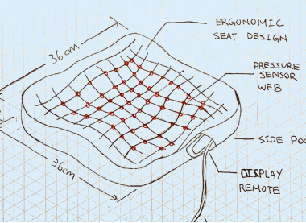
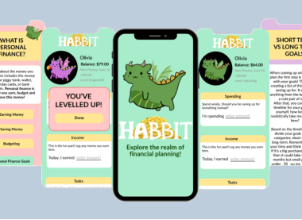
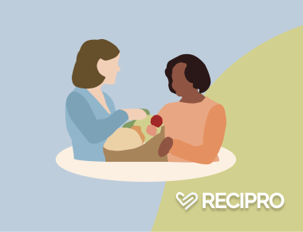

Irene Ni
r9ni@uwaterloo.ca
hi, im irene
Biomedical Engineering student at UWaterloo. Passionate about the intersection between medicine and tech.
Currently working with e-NABLE Unlimbited to 3D print low-cost prosthetics for kids. Designer and developer of Recipro, a community-based app fostering reciprocal acts of kindness.
Find me making great playlists, fencing, and re-reading Jane Austen in my free time.
my projects

Research + Design
Wheelchair Scale

UI/UX Design + Illustration
Habbit Budgeting App

UI/UX Design + Backend Developer
Recipro Volunteer App

Dementia Support Initiative
Lives of Colour